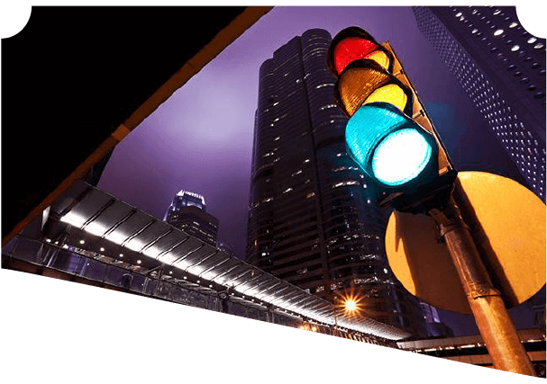

地铁
目前成都已开通地铁1、2、3、4号线，起步价为2元/ 人，最高单程票票价为7元
公交
大部分为无人售票。单程通票2元/人；少数由主城区开往郊县的公交线路为有人售票公交，票价大多为2元/人~3元/人。
出租车
车型不同，出租车起步价不同。8元起跳。
押金 20 元/ 张
各公交营运点或者地铁站都有销售，第一次至少充值10 元。使用天府通卡可乘坐成都市市区地铁线路和所有安装天府通公交POS机具的公交线路，并可享受地铁票价9折优惠和主城区范围内公交线路票价5折优惠。
退卡退款：
用户办理押金卡退卡，须出示押金凭证和退卡人身份证原件，并确保原卡表面完好无损，使用正常。